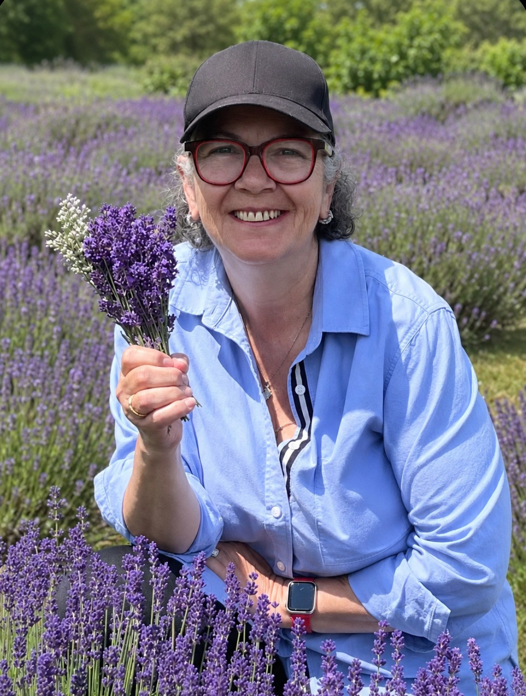

Arzu Saydam
Yazar | Ankostik Sanatçı | Hayatın GözlemcisiAuthor | Encaustic Artist | Observer of Life

Arzu Saydam, çalışmalarını merak, gözlem ve çevresindeki dünyayı anlama arzusuyla şekillendiren Kanadalı bir yazar ve ankostik resim sanatçısıdır.Arzu Saydam is a Canadian author and encaustic artist whose creative work is rooted in curiosity, observation, and a lifelong desire to understand the world around her.
İstanbul’da doğup büyümüş, daha sonra Kanada’ya yerleşmiştir. Yaşam yolculuğu onu farklı ülkelerden, kültürlerden ve mesleklerden geçirmiş; her biri hayata bakışına yeni bir katman eklemiştir.Born and raised in Istanbul, Türkiye, she later made Canada her home. Her journey has taken her through different countries, cultures, and professions, each adding another layer to the way she sees life.
Uluslararası bankacılık, üst düzey yöneticilik ve gayrimenkul alanlarında çalışmış olan Arzu’nun yazarlığa ve sanatçılığa uzanan yolu, alışılmışın dışındadır. Ancak hayatı boyunca değişmeyen şey, insanlara, doğaya ve bizi şekillendiren deneyimlere duyduğu meraktır.With a background in international banking, senior management, and real estate, Arzu's path to becoming an author and artist has been anything but conventional. Yet throughout her life, one thing has remained constant: her curiosity about people, nature, and the experiences that shape us.
Yazmaya, kitap yayımlama hedefinden çok, kendini ve hayatı anlama isteğiyle başlamıştır. Türkçede Bahçemin Sessiz Bilgeliği adıyla da yayımlanan ilk kitabı The Gentle Wisdom of My Garden’da, bahçesinde fark ettiği sessiz öğretilerden yola çıkarak doğayla gündelik insan deneyimleri arasında bağlar kurar.Her writing began as a personal exploration rather than a pursuit of publication. In her first book, The Gentle Wisdom of My Garden, also published in Turkish as Bahçemin Sessiz Bilgeliği, she draws upon the quiet lessons found in her garden, connecting the natural world with everyday human experiences.
Ankostik resme duyduğu tutku, ona başka bir ifade alanı açmıştır. Balmumu, pigmentler, ısı ve katmanlarla çalışırken, duygularını ve düşüncelerini kelimelerin ötesinde keşfedebildiği bir yaratım süreciyle tanışmıştır. The Quiet Wisdom of Wax: Reflections on Art, Creation, and the Inner Life of a Creator (Balmumunun Sessiz Öğretisi: Sanat, Yaratıcılık ve Sanatçının İç Dünyası Üzerine Düşünceler) adlı İngilizce ve Türkçe kitabı, resimle yazıyı bir araya getirirken sanatsal ifade ile eseri yaratan kişinin iç dünyası arasındaki ilişkiye odaklanır.Her passion for encaustic painting opened another avenue of expression. Working with beeswax, pigments, heat, and layers, she discovered a creative process that allowed her to explore emotions and ideas beyond words. Her book The Quiet Wisdom of Wax: Reflections on Art, Creation, and the Inner Life of a Creator brings her painting and writing together, reflecting on the relationship between artistic expression and the inner life of the person creating it.
Çalışmaları doğa ve sanatın ötesine uzanır; insan ilişkilerini, beklentileri, güveni, bireyselliği ve gündelik hayatın çelişkilerini de sorgular.Her work extends beyond nature and art into questions about human relationships, expectations, trust, individuality, and the contradictions of everyday life.
Arzu, yazarken ya da resim yaparken başkalarına nasıl yaşamaları gerektiğini öğretmeyi amaçlamaz. Gözlemlemeyi, soru sormayı ve okurlarını daha önce üzerinde düşünmemiş olabilecekleri bakış açılarını değerlendirmeye davet etmeyi tercih eder.Arzu does not approach writing or painting with the intention of teaching others how to live. She prefers to observe, question, and invite readers to consider perspectives they may not have explored before.
Yaratıcılığın bütün cevaplara sahip olmayı gerektirmediğine inanır. Bazen onun en büyük değeri, daha iyi sorular sormamıza imkân vermesidir.She believes that creativity does not require us to have all the answers. Sometimes, its greatest value lies in allowing us to ask better questions.
Bugün Nova Scotia’da yaşayan Arzu, gayrimenkul alanındaki çalışmalarını sürdürürken yazmaya, resim yapmaya, bahçesiyle ilgilenmeye ve hayatın sıradan anlarında ilham bulmaya devam etmektedir.Today, Arzu lives in Nova Scotia, where she continues to work in real estate while writing, painting, gardening, and finding inspiration in the ordinary moments of life.
Onun için resim ve yazı birbirinden ayrı uğraşlar değildir. İkisi de hayata dikkatle bakmanın farklı yollarıdır.For her, art and writing are not separate pursuits. They are simply different ways of paying attention.
Neden ÜretiyorumWhy I Create
Yazıyorum, çünkü bazı düşünceler üzerinde durup düşünmek için bir an yetmiyor.I write because some thoughts deserve more attention than a passing moment allows.
Resim yapıyorum, çünkü hissettiğim her şeyi kelimelerle anlatamıyorum.I paint because not everything I feel can be expressed through words.
Bahçeyle uğraşıyorum, çünkü doğayı ne kadar dikkatle gözlemlersem gözlemleyeyim, beni şaşırtmaya devam ediyor.I garden because nature continues to surprise me, no matter how carefully I observe it.
Bunların hiçbirine bir planla başlamadım.None of these activities began as a business plan.
Kendim için yapmak istediğim şeylerdi.They began as something I wanted to do for myself.
Zamanla hepsi aynı şeyi keşfetmenin farklı yollarına dönüştü: bütün güzellikleri, çelişkileri, hayal kırıklıkları ve beklenmedik keşifleriyle hayatı.Over time, they became different ways of exploring the same thing: life, with all its beauty, contradictions, disappointments, and unexpected discoveries.
Bütün bunları çözdüğüm için üretmiyorum.I don't create because I have mastered any of it.
Henüz çözemediğim için üretiyorum.I create because I haven't.
Ve hâlâ merak ediyorum.And I am still curious.